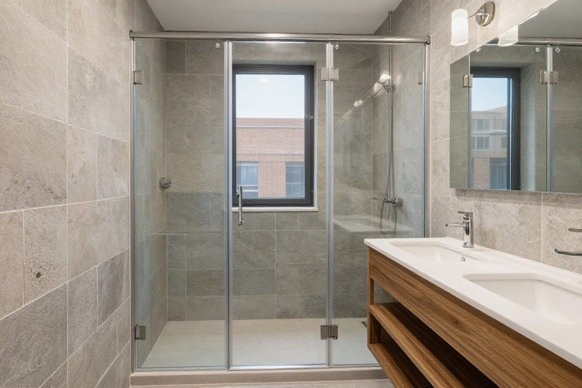

Mutfak, banyo, komple daire.

 ÖnceSonra
ÖnceSonra
Bir banyonun örnek takvimi aşağıda gün gün.
- Bölge
- Ataşehir, Kadıköy, Ümraniye, Maltepe ve Üsküdar'da tadilat.
- Keşif
- Ücretsiz
- Teklif ve sözleşme
- Yazılı
- Teslim günü
- Teklifte yazılı olarak belirtilir.
Keşif isteyin, yazılı teklif alın
Telefonda sorulan dört soru, burada dört adım. Her adımda tek soru.
Örnek takvim: bir banyo yaklaşık 9 iş günü
Her işe başlamadan bu takvimi size yazılı veririz. Hangi gün evde kim çalışacak, baştan bilirsiniz.
Su yalıtımı test edilmeden fayansa geçilmez: gider kapatılıp 24 saat su bekletilir.
Son işler
Her işte semt, süre ve kapsam yazılı.

 ÖnceSonra
ÖnceSonraİş kaydı
| İş | Semt ve kapsam | Süre |
|---|---|---|
| Komple daire | Kadıköy, 3+1, 115 m², sıva, boya, zemin, elektrik | 7 hafta |
| Boya, alçı | Maltepe, 2+1, 85 m², tavan alçısı, iki kat boya | 6 iş günü |
| Parke | Üsküdar, 45 m², laminat, süpürgelik | 2 iş günü |
Ev sahiplerinin notları
| Not | Semt |
|---|---|
Banyo için 9 gün dediler, 9. gün akşam anahtarı verdiler. Her akşam ne yapıldığını fotoğrafla attılar. | Ataşehir, Atatürk Mahallesi |
Teklifte olmayan tek kuruş istemediler. Malzemeyi ben seçtim, sadece işçilik ödedim. | Kadıköy, Kozyatağı |
Komşulara söküm gününü önceden kendileri haber verdi, apartmanda tek şikâyet olmadı. | Ümraniye |
İşi biz yaparız, taşerona vermeyiz
Örnek metin: Kalfa Yapı 2009'dan beri Ataşehir'de. Usta başı Hasan Kalfa. Sekiz kişilik kendi ekibimizle çalışırız: iki fayansçı, bir tesisatçı, bir elektrikçi, bir boyacı-alçıcı, bir marangoz-parkeci, bir yardımcı ve şantiyeyi her gün gezen usta başı. Hangi gün evde kim olacağını takvimde yazarız.
4,9 Google'da 120'yi aşkın yorum. Haritada aç (demoda kapalı)
Yaptığımız işler
- Banyo yenileme
- Mutfak yenileme
- Komple daire tadilatı
- Su yalıtımı
- Sıhhi tesisat
- Elektrik tesisatı
- Seramik, fayans
- Boya, badana
- Alçı, kartonpiyer
- Asma tavan
- Laminat, parke
- İç kapı değişimi
- Dolap, tezgâh montajı
- Isı yalıtımı (daire içi duvar)
Akla gelen detaylar
Paftanın notları gibi: hepsi açık, sırayla okunur.
Keşif ücretli mi?
Hayır. Ataşehir, Kadıköy, Ümraniye, Maltepe ve Üsküdar'da keşif ücretsizdir; ölçü alınır, ardından yazılı teklif gelir.
Banyo tadilatı kaç gün sürer?
Standart bir banyo 8-10 iş gününde biter. Teslim günü teklifte yazılıdır.
Malzemeyi kim alıyor?
İki seçenek var: malzemeyi biz alırız ve faturasını veririz, ya da siz seçersiniz, biz yalnız işçilik alırız.
Sözleşme yapıyor musunuz?
Evet. İşe başlamadan kapsam, malzeme, ödeme planı ve teslim tarihi yazılı sözleşmeye geçer. İş sırasında teklifte olmayan bir şey çıkarsa önce size yazılı sorulur; onayınız olmadan yapılmaz.
Evime zarar gelirse? Moloz ve temizlik kimde?
Moloz torbalanıp apartmandan bizim tarafımızdan çıkarılır. Kapı, zemin ve ortak alanlar işe başlamadan korunur; iş bitince kaba temizlik yapılır. Söküm ve gürültülü işlerden önce apartman yönetimine biz haber veririz. İşten kaynaklı bir hasar olursa yazılı olarak tespit edilip bizim tarafımızdan giderilir.
Neleri yapmıyoruz?
Doğalgaz tesisatını yetkili gaz firması yapar, biz yapmayız. Taşıyıcı duvar, cephe ya da ruhsat gerektiren işlere girmeyiz.
Garanti veriyor musunuz?
Su yalıtımı ve tesisat işçiliği için garanti kapsamı ve süresi teklifte ve sözleşmede yazılı verilir.
Ödeme nasıl?
Başta malzeme payı, iş ortasında bir ara ödeme, kalan teslimde. Oranlar teklifte yazılıdır.